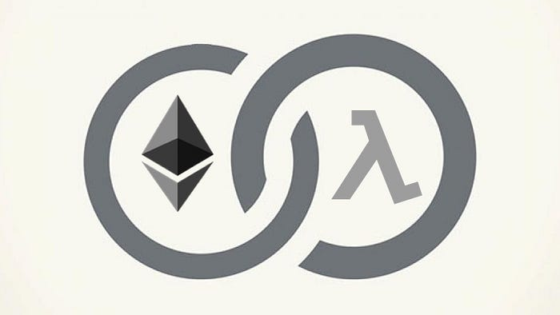

Blockchain and Serverless: a Marriage Made in Cyberspace
Originally published at https://justiceconder.medium.com/blockchain-and-serverless-a-marriage-made-in-cyberspace-baa647e03562

Two emerging software development methodologies are exploding right now and show no signs of slowing. The first is Blockchain. According to the latest Upwork Skills Index (Q2 2018), Blockchain topped the list of in-demand skills for the second quarter in a row with developers charging as much as $120 an hour.
The second-highest trending new technology on that list is an instance of a new programming architecture called Serverless computing or just Serverless for short. Serverless solution architects are suddenly making $130k — $150k a year.
Serverless computing or FaaS as it’s sometimes called stands for “Function as a Service” and is a cloud computing paradigm that abstracts everything away down to a bare language-specific execution environment. With Serverless, the user doesn’t provision or orchestrate servers or have to worry about scaling at all. You just write a function and that function just kind of lives in the cloud abstractly.
What’s so interesting about the Blockchain and Serverless computing approaches is they lend themselves to each other beautifully. Blockchain provides guaranteed execution and zero-trust financial transactions and Serverless nicely fills the gap for all off-chain constrains. You see, it’s still not feasible or desirable to put large applications on the Blockchain because they are slow and expensive. DApps also need some mechanism to get information about the real world. This has to happen through an off-chain mechanism, typically referred to as an Oracle.
These are real engineering tradeoffs that have to be taken into consideration when deciding on-chain and off-chain functionality. What makes the Blockchain and Serverless approaches so complementary though are their similarities. We’ll look at three of them.
They both outsource infrastructure. You don’t have a specific physical or virtual machine that hosts or executes your code on a Blockchain or Serverless platform. That is abstracted away. No machine orchestration is required by you. You can exclusively focus on business logic without any concern for a technology “stack”.
Another similarity is that they both work on a pay-per-execution cost structure. You don’t pay anything to have your code exist on a Blockchain or on a Serverless platform. You only pay to have your code executed and that relative to the expended resources required to run that execution. Both of these features should make these programming paradigms attractive to any organization.
The last similarity these technologies have is that they both have various competing but comparable platform offerings. This is attractive because it, ideally, should mitigate against platform lock-in. On the DApp platform-side, you have Ethereum, EOS, Cardano, NEO, QTUM, Stellar, and Hyperledger Fabric, to name a few and on the Serverless side you have AWS Lambda, Microsoft Azure, IBM OpenWhisk, Google Cloud Platform, Kubeless, Spotinist, Fn Project, and Cloudflare Workers as some major players.
It should be noted that some new DApp platforms are including off-chain features directly into their development platform in order to address the challenges of scalability but It’s my opinion that that role shouldn’t be leveraged by the smart contract platform. The entire point of the Blockchain approach is enabling zero-trust interactions. The best way to preserve that is to control your own off-chain features and use an on-chain product for those features that only a Blockchain architecture can provide.
With Blockchain, you are able to enter into trustless financial contracts with guaranteed execution, and with Serverless you get high-speed high-availability complex compute time. It’s this complement that should be leveraged specifically and individually. This exemplifies the principle of maintaining a separation of concerns.
The above-mentioned properties are good reasons these two technologies are trending right now and have been for a while. They both compliment each other and offer what the other lacks. It may turn out that Blockchain acts as the mechanism that enables untrusted Serverless microservices to interact with each other with trust and enforced predictability and Serverless acts to fill the gap in keeping smart contracts connected to events in the real world.
However it plays out, one thing is for sure. It would behoove developers and organizations to explore both of these technologies in depth.